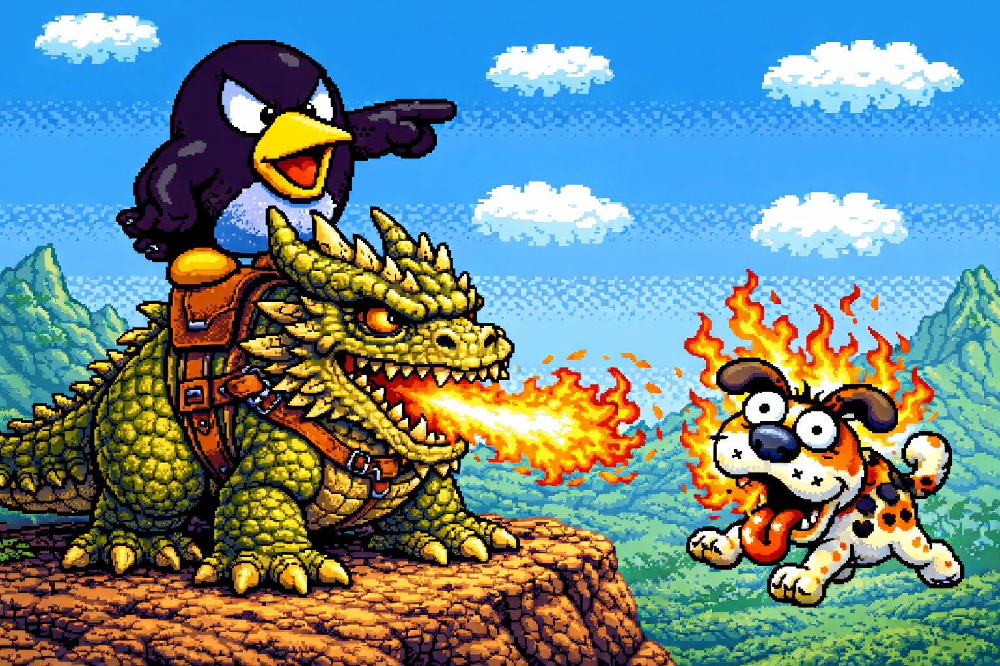
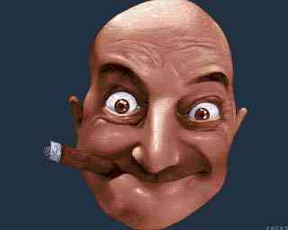

The Outcasts........
 This depiction was approximated using primitive Earth-based imaging technology |
<<<----- Poochy Getting Fried By Ralphie The Raven's Rufflecrumb. Poochy has been a bad dog. Trained by his master Dj Gilber (Whom we won't speak of at this time.)to hate all Ashashuaians, and to bring some kind of useless logic to the planet for his own scientific reason. Poochy was once a well respected mutt on Ashashua. That is, until he broke the ulimate law of pestering and frightening people with his awful look and his foul stench. Ralphie The Raven, however was not going to stand for this kind of action. Being the kind of hero that he is to Asahshua, Ralphie sought after Poochy to get rid of his evil and overwhelming annoyance. As you can see in this pic, Ralphie was very successfull in his attempt. Ever since the "Ralphie with Rufflecrumb vs Poochy with Rufflecrumb" incident (Poochy felt it was unfair to have "hand to hand" combat with Ralphie, so a rufflecrumb was given to them) Poochy has been considered an outcast on Asahshua. |
This dog kinda thing but not really, now lives in the desolate waste lands with his owner. Poochy gained an undelightfull deformity after the confrontation with Ralphie. He has a Disorder called Poochipa (poo-chee-pa') wich means " one who deteriorates into the sand, then reforms itself with the worms and maggots of the soil creating an intolerable look of filth every half hour!"
BeanieWeenie Sucking His Stogie ----->>> This man is wanted on Aashashua. Basically, he tells lies and sells them to the ignorant children of the ashashuaian world. These children do not realize what they are being sold before it's too late. I'ts kinda like the whole Santa Clause thing, I mean you just don't go around telling kids that a 360 lb guy can fit into a chimeney! It REALLY crushes their hope when they find out that 150 lb daddy broke his back and crushed his legs trying to do it! Never tell kids things that degrade all science and logic! Thats how it is on Asahshua, except exact opposite! Anyhow, there is a bounty out for this man. If and when someone does capture him, it is unclear where he will be held. GloomWing has refused to let him be held at The Tower Of Lost Souls, because he doesn't like the smell of his cigars. |
 |